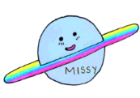
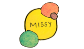

Other Pages: About Me | Teaching

Service & Scholarship
Service
I have been a member of the FASTrack committee since fall 2019, and I participated in the 2019-20 Traditional Teaching Circle as well as in the Reading Scholarship Community of Practice (fall 19).
In fall 2019, I helped a UM senior found Missy: writing & art by UM’s LGBTQ+ students & allies, and I currently serve as the publication’s faculty advisor (2019--present). As part of the publication’s community outreach, I co-organized a writing group/workshop for LGBTQ+ students in spring 2020.
My other service to the university has included: Grants Officer for the Glitterary Festival (spring 20), co-founder/host of UM’s LGBTQ+ Faculty Meetup, judge for a Speech 314 Debate Final (fall 19), and poetry judge for the Southern Literary Festival (fall 19).
 
Funded Projects & Grants
The Sarah Isom Center for Women and Gender Studies, UM
Summer Research Grant (2020)
Division of Diversity and Community Engagement Sponsorship, UM
for Missy: writing & art by UM’s LGBTQ+ students & allies (2020)
Conference Presentations
South Carolina Council of Teachers of English (SCCTE) Jan. 31-Feb. 1, 2020
Presenter: “New Ways of Teaching Old Things: Using Multimodality to Teach Analysis and Research.”
Presenter: “Teaching in the South: Tackling Ghosts of the Past in First-year Writing.”
Other Conferences & Workshops Attended
Transitioning to College Writing (TCW) Oct. 24-25, 2019.
2019 TCW Workshops Attended: “Cut, Paste & Copy Your World:Using Zines to Introduce Community Writing” (Don Unger & Liz Lane) and “Writing While Serving, Serving While Writing” (Keynote: Isabel Baca)
For more information, please email: tmgilles@olemiss.edu